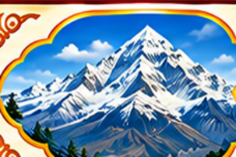
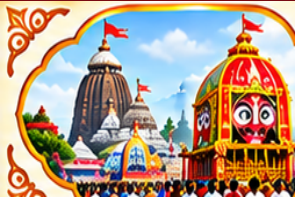
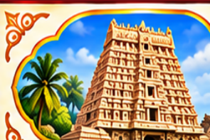

Chhapaiya is the birthplace of Nilkanth Varni (Bhagwan Swaminarayan), where he was born as Ghanshyam and displayed divine qualities from a young age.

2. Himalayas
Story
During his yatra, Nilkanth Varni travelled through the Himalayas, facing extreme cold, difficult terrain, and many hardships with unwavering determination and unshakeable faith.
3. Pulhashram
Story
At Pulhashram (near Muktinath), Nilkanth Varni performed intense tapas with deep concentration and devotion, even in harsh natural surroundings.
4. Mansarovar
Story
During his yatra, Nilkanth Varni visited Mansarovar in the Himalayas, where he offered prayers with deep devotion and reverence.

5. Puri
Story
In Jagannath Puri, Nilkanth Varni participated in the Rath Yatra festival, where his devotion and humility touched the hearts of many.

6. South India
Story
During his yatra in South India, Nilkanth Varni visited many sacred places, performed tapas, and shared the values of devotion and dharma.
7. Loj
Story
After completing his pilgrimage, Nilkanth Varni finally reunited with his guru at Loj, his final destination.